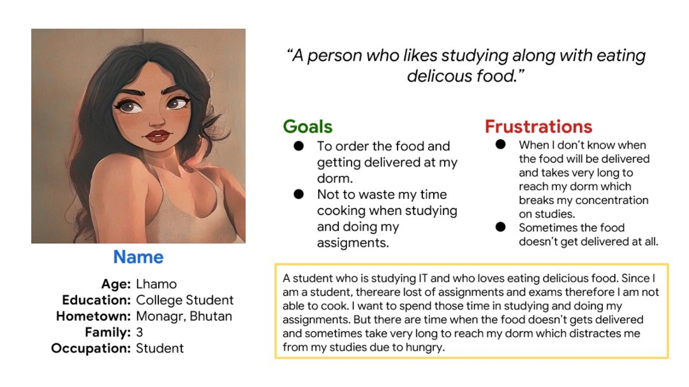

Food Ordering and Tracking System
Project Overview
The product: A Food Ordering and Tracking System is a digital platform designed to facilitate the process of ordering food from restaurants and tracking the status of those orders in real-time. These systems are typically implemented as mobile applications and web applications,
Project Duration: 14th Febrauray-25th May

Personas
Paper Wireframes

Low-Fidelity Wireframes

High-Fidelity Prototype

Accessibility
- Heading with different sized text were used
- Buttons are given color so that users know exactly what to do after some task
- Typography was used to give hierchy
Takeaways
- [Key takeaway 1]
- [Key takeaway 2]
- [Key takeaway 3]
Next Steps
[Describe actionable next steps based on findings]